XVIII FESTA FEIRA
Agrícola e Artesanal
De 28 de abril a 06 de maio
MORRETES - PARANÁ - BRASIL
2.001
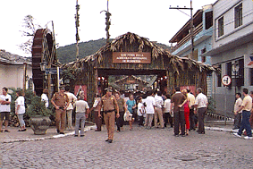
Entrada principal.
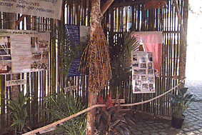
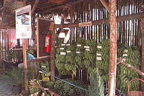
Entrada principal - Barraca da Palmeira imperial Entrada principal - Barraca da Banana caturra.
"FINALIDADE"
Promover e divulgar produtos agrícolas e artesanais,
além do potencial turístico e gastronômico do
município de Morretes.
As fotos aqui apresentadas são FOTOS DIGITAIS.
Cópias em papel podem ser obtidas através de impressoras coloridas.
Se desejar receber GRÁTIS o arquivo de algumas das fotos abaixo,
em formato maior, click no endereço abaixo e envie um e-mail para o autor.
felipenicolau@felipenicolau.com.br
|
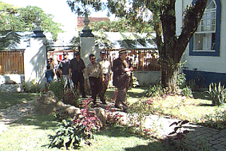 1 - Autoridades entrando na Casa Rocha Pombo. |
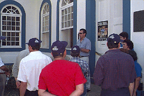 2 - Secr. da Cultura - Luiz T. Pessoa recebendo as autoridades. |
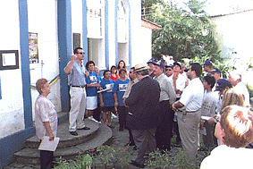 3 - Discurso do Secretário da Cultura - Luiz Targino Pessoa. |
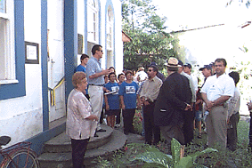 4 - Discurso do Secretário da Cultura - Luiz Targino Pessoa. |
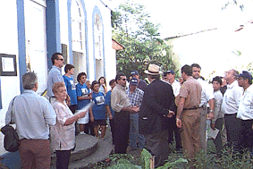 5 - Discurso do Prefeito Municipal - Helder Teófilo dos Santos. |
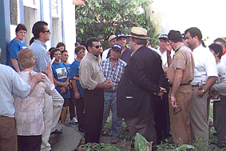 6 - Discurso do Prefeito Municipal - Helder Teófilo dos Santos. |
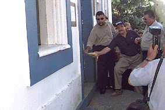 7 - Abertura - Pref. Helder, Ver. Algaci Túlio e Dep. Seleme. |
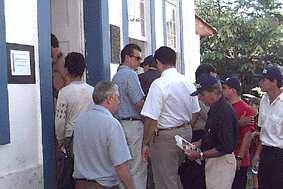 8 - Entrada dos convidados na II Mostra de Fotografias. |
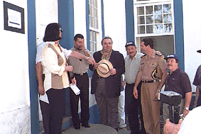 9 - Abertura da VI Mostra de Arte, com a presença do Dep. Rafael Grecca. |
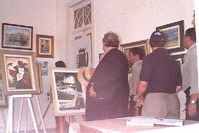 10 - Dep. Rafael Grecca e Pref. Helder visitando a mostra de arte. |
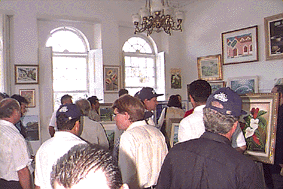 11 - Telas - Visitantes apreciando as obras de arte. |
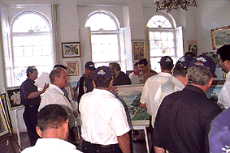 12 - Telas - Visitantes apreciando as obras de arte. |
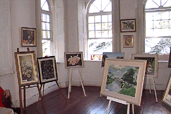 13 - VI Mostra de telas a óleo. |
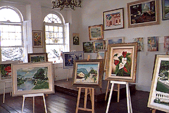 14 - VI Mostra de telas a óleo. |
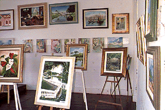 15 - VI Mostra de telas a óleo. |
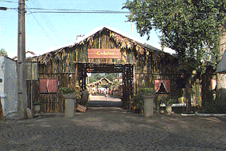 16 - Ao amanhecer, barracas prontas para os visitantes. |
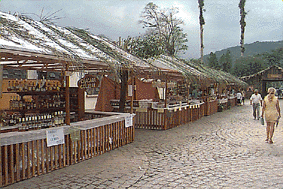 17 - Ao amanhecer, barracas prontas para os visitantes. |
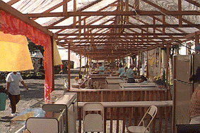 18 - Ao amanhecer, barracas prontas para os visitantes. |
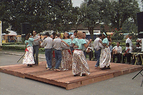 19 - Grupo local de Fandango. |
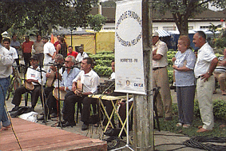 20 - Músicos do Fandango. |
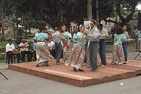 21 - Grupo local de fandango. |
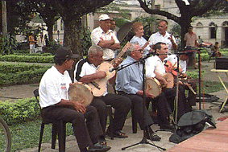 22 - Músicos do Fandango. |
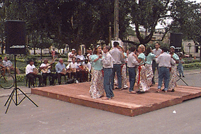 23 - Grupo local de Fandango. |
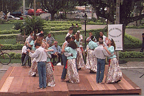 24 - Grupo local de Fandango. |
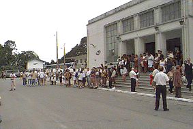 25 - Chegada dos visitantes na estação. |
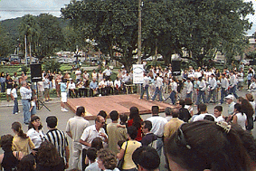 26 - Grupo de Fandango entrando no tablado. |
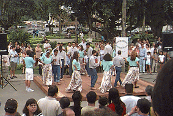 27 - Visitantes extasiados com o Fandango. |
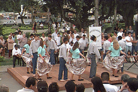 28 - Visitantes extasiados com o Fandango. |
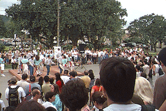 29 - Visitantes extasiados com o Fandango. |
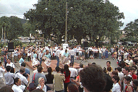 30 - Visitantes extasiados com o Fandango. |
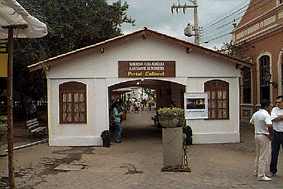 31 - Portal Cultural. |
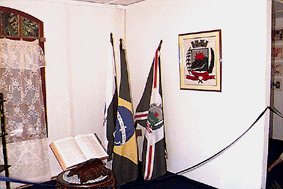 32 - Morretes na atualidade |
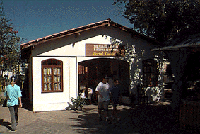 33 - Portal Cultural. |
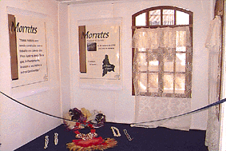 34 - O início de Morretes. |
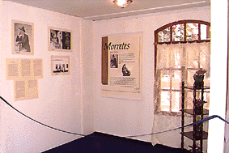 35 - João Turim - Artista morretense. |
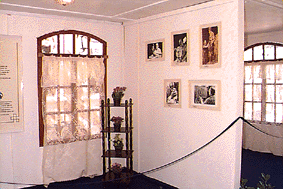 36 - João Turim - Artista morretense. |
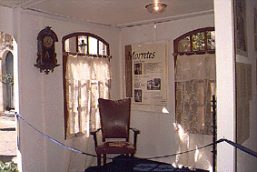 37 - Rocha Pombo - Escritor morretense. |
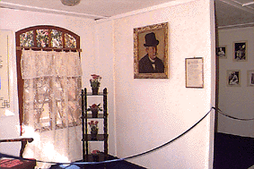 38 - Rocha Pombo - Escritor morretense. |
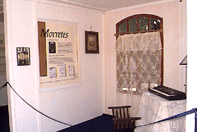 39 - Silveira Neto - Poeta morretense. |
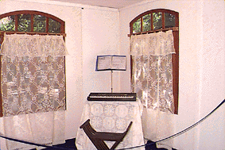 40 - Silveira Neto - Poeta morretense. |
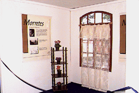 41 - Lange de Morretes - Pintor morretense. |
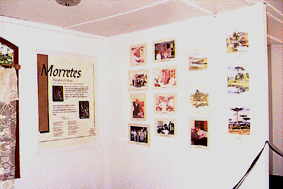 42 - Theodoro De Bona - Pintor morretense. |
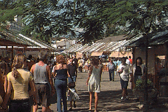 43 - Visitantes da feira. |
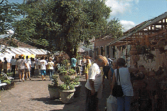 44 - Visitantes da feira. |
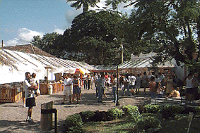 45 - Visitantes da feira. |
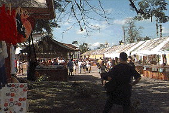 46 - Visitantes da feira. |
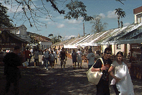 47 - Visitantes da feira. |
48 - Visitantes da feira. |
49 - Visitantes da feira. |
50 - Visitantes da feira. |
51 - Visitantes da feira. |
52 - Roda d'água - Marco histórico dos engenhos morretenses. |
| VOLTAR | COLÉGIO | XVIII FESTA FEIRA |